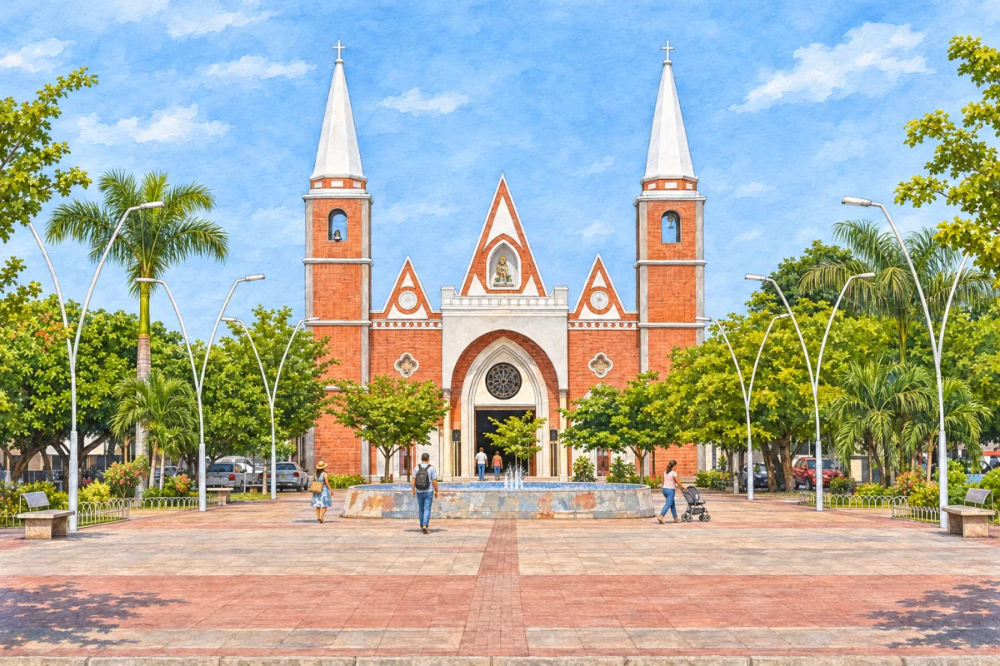

Nueva propuesta pendiente de aprobación. La fachada debe conservar las torres de ladrillo y las agujas blancas de la referencia. Todavía no se reemplazó la imagen de dev1.


Referencia adicional: Comisión Fílmica de Colombia · Plaza Alfonso Ávila Quintero.